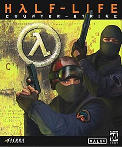
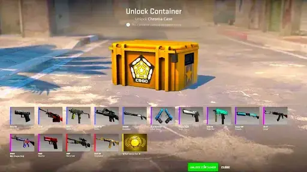
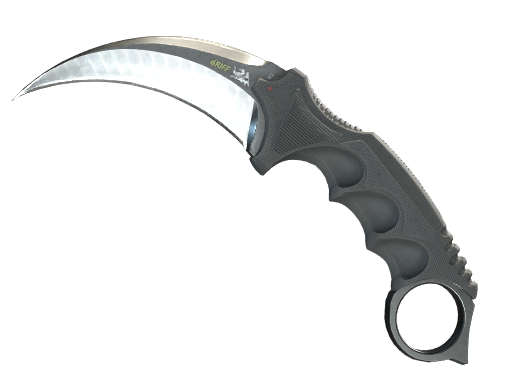
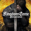
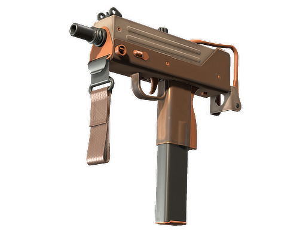
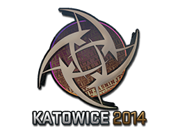
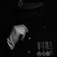
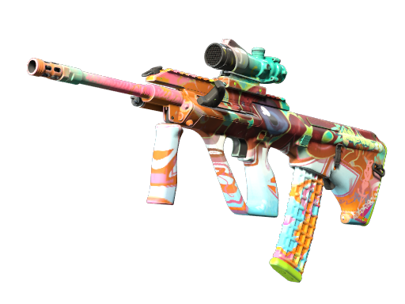
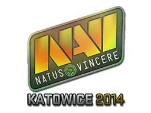

O Inicio
O Counter-Strike mais conhecido como CS-GO ou CS2 teve o seu inicio em 1999 quando 2 pessoas tiveram ideia de criar um Mod de Half-Life 1 Que no Ano seguinte em 2000 a Valve™ comprou o Mod e logo depois lançou ele oficialmente como um Jogo o Cs 1.0 e logo depois o CS 1.6 Oque lotou as LanHouses do Brasil inteiro Logo em 2003 lançou o Counter-Strike: Condition Zero (Com missões single-player) Depois do Counter-Strike: Condition Zero veio o Counter-Strike: Source Logo depois a comunidade ficou dividida entre o CS 1.6 e o Counter-Strike: Condition Zero Em 2012 a Valve™ lançou o Counter-Strike: Global Offensive Onde junto com ele lançou o Mercado de Skins oq deu um Lucro a Valve™ de mais de 2 Bilhões de dolares.


Campeonatos
O Cs tem muitos Campeonatos que são desputados por Times Profissionais o campeonato mais famoso é Major abaixo estara uma Lista do Campeonatos
- Major
- ESL Pro Tour
- BLAST Premier
- IEM (Intel Extreme Masters)
- ESL One
- FISSURE Playground
Porque o Major é campeonato mais famoso de Cs?
O Major é o campeonato mais famoso de Cs pois todos os jogadores podem participar dele o Major não é como outros campeonatos onde há times convidados qualquer pessoa pode particar do Major
Ganhadores do Major
- Fnatic (2013)
- Virtus.Pro (2014)
- Ninjas in Pyjamas (2015)
- Luminosity/Sk Gaming (2016)
- Astralis (2017)
- Cloud9 (2018)
- Astralis (2019)
- Natus Vincere (2021)
- Faze (2022)
- Team Vitality (2023)
- Team Spirit (2024)
- Team Vitality (2025)
Final
O CS-GO ou Counter-Strike:Global Offensive fechou em março de 2023 onde o CS2 foi lançado assim vindo com uma Engine a Source 2 mais pesada e graficos melhores mas ainda com muitos Bugs e comandos incompletos.
O Mercado de Skins
O Mercado de Skins foi lançado junto do CS-GO oq fez o a Valve™ ter um lucro absurdo o Mercado de Skins funciona com aberturas de caixas as LootBoxs onde você paga um valor por uma caixa e uma chave tendo a chance de pegar um item de valor baixo ou um item millionario que pode valer 100k a 1M de dolares

Skins mais caras de Cs
| Rank | Skin | Float Value | Seed | Applied | ||||
| #1 |  |
★Karambit | Vanilla | 0.000000000 | 0 |  |
||
| #2 |  |
MAC-10 | Bronzer | 0.0000000000010431 | 673 |
  |
||
| #3 |  |
Aug | Eye of Zapens | 0.00000000019395 | 532 |
 |